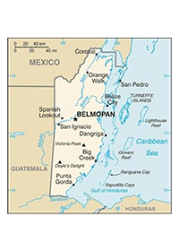

In 1862, Belize was declared the colony of British Honduras. Belize finally became an independent country in 1981. Due to on-going contraversy between Guatemala and Belize, they have resorted to the International Court of Justice to settle their differences.
Belize is located in Central America. In Belize, the climate is normally hot and humid, however, May to November is referred to as the rany season, and February to May is referred to as the dry season.
22,806 square kilometers of Belize is land which leaves 106 square kilometers of water. In total, Belize is 22,966 square kilometers.
| Name | Height |
|---|---|
| Doyles Delight | 1,124 meters |
| Caribean Sea | 0 meters |
| Ethnicity | Percentage |
|---|---|
| Mestizo | 53.9% |
| Creole | 25.9% |
| Maya | 11.3% |
| Garifuna | 6.1% |
| East Indian | 3.9% |
| Mennonite | 3.6% |
| White | 1.2% |
| Asian | 1% |
| Unknown | 0.3% |
In Belize, the median age for men is 23 years whereas the median age for women is 24.8 years. The total median age is 23.9 years of age.
Some of the Current Envionmnet Issues That Belize is Facing Include:
As of 2022, 46.4% of the total population is urban and the rate of urbanization is 2.3% of the annual rate of change.
Belize's revenue from coal is 0% of GDP and their total revenue from forest resources is 0.31% of GDP.